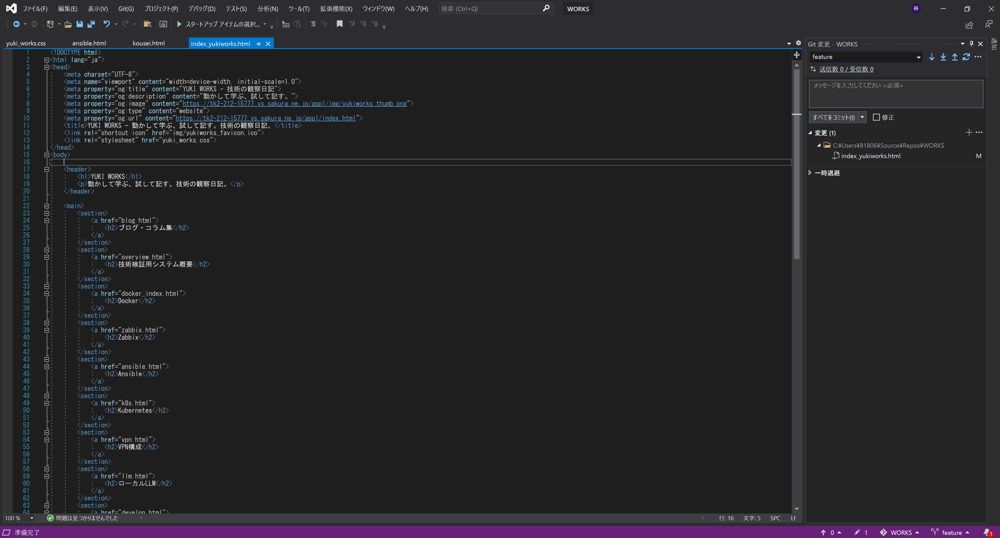

10. Git/GitHubと開発・デプロイの流れ
個人開発プロジェクトでは、GitとGitHubを活用してソースコード管理を行っています。以下は、ローカル開発からWeb公開までの基本的なフローです。
使用ツール
- VSCode： 開発エディタ（Git拡張機能使用）
- Git： ローカルリポジトリでのバージョン管理
- GitHub： リモートリポジトリ、バックアップ、チーム共有基盤
開発からデプロイの基本フロー
ローカル開発（VSCode）
↓
git add / commit / push
↓
GitHub（マージ）
↓
WebサーバにSSHログイン → git pull
↓
Apach・Nginx等で公開ローカル開発・git add / commit / push（VSCode）
GitHub（マージ）

WebサーバにSSHログイン → git pull
学習・実践中の内容
- ブランチ運用（main / feature / fix など）
- GitHub上でのプルリクエスト作成とレビュー練習
今後の展望
- GitHub Actions を使ったCI/CDの導入検討